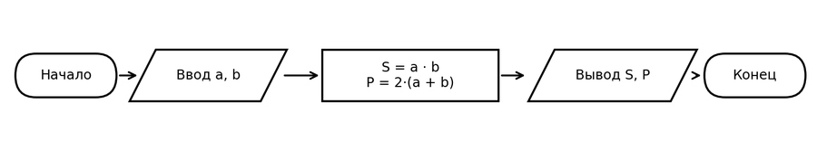

Ответ. Алгоритм это точная последовательность действий, которая за конечное число шагов приводит от исходных данных к нужному результату. Пример: рецепт блюда, инструкция к прибору. Программа это алгоритм, записанный на языке программирования.
1) Дискретность: алгоритм делится на отдельные шаги.
2) Определённость: каждый шаг записан однозначно, без «посолить по вкусу».
3) Понятность: используются только команды, которые исполнитель умеет выполнять.
4) Конечность: работа заканчивается за конечное число шагов.
5) Массовость: подходит для всех однотипных задач, а не для одного набора данных.
6) Правильность: для допустимых данных результат верный.
1) Линейный. Все шаги идут по порядку, каждый один раз: ввод, вычисление, вывод.
2) Разветвляющийся. Путь выбирается по условию: верно одно, не верно другое (if...else, switch).
3) Циклический. Группа действий повторяется несколько раз (for, while, do...while).
1) Словесный (задача: по сторонам a и b найти S и P): ввести a и b; умножить a на b, получится S; сложить a и b, сумму умножить на 2, получится P; вывести S и P.
2) Формульный: S = a * b, P = 2 * (a + b).
3) Блок-схема (овал: начало и конец, параллелограмм: ввод и вывод, прямоугольник: вычисление):

4) Псевдокод:
начало; ввод a, b; S := a * b; P := 2 * (a + b); вывод S, P; конец5) Программа на C++:
#include <iostream>
#include <clocale>
using namespace std;
int main()
{
setlocale(LC_ALL, "Russian");
double a, b;
cout << "Введите a и b: ";
cin >> a >> b;
cout << "S = " << a * b << endl;
cout << "P = " << 2 * (a + b) << endl;
return 0;
}Результат:
Введите a и b: 5 3
S = 15
P = 16Ответ. Указатель это переменная, в которой хранится не значение, а адрес другой переменной (ячейки памяти). Это «бумажка с номером квартиры», а не сам жилец.
тип *имя; // int *p; double *d;1) &x адрес переменной x (взятие адреса).
2) *p значение по адресу, который хранится в p (разыменование).
3) nullptr пустой указатель, который никуда не указывает. Тип указателя должен совпадать с типом переменной.
Ответ. Указатель инициализируют адресом переменной: int a = 10; int *p = &a; или значением nullptr. Если не инициализировать, в нём будет случайный адрес («дикий» указатель), это опасно. Указатель хранит только адрес; само значение получают так: *p. Через указатель значение можно менять: *p = 25; изменит переменную a. Размер указателя не зависит от типа (4 или 8 байт).
Ответ. В функцию передаём адреса, поэтому она меняет сами переменные, а не их копии.
#include <iostream>
#include <clocale>
using namespace std;
void swapValues(int *x, int *y)
{
int tmp = *x;
*x = *y;
*y = tmp;
}
int main()
{
setlocale(LC_ALL, "Russian");
int a, b;
cout << "Введите a и b: ";
cin >> a >> b;
swapValues(&a, &b);
cout << "После обмена: a = " << a << ", b = " << b << endl;
return 0;
}Результат:
Введите a и b: 15 42
После обмена: a = 42, b = 15Ответ. Переменная это именованная область памяти, в которой хранится значение определённого типа. Значение можно менять во время работы программы. У переменной есть имя, тип, значение и адрес.
тип имя; // int age;
тип имя = значение; // double price = 99.5;
тип a, b, c; // int x, y, z;Правила имени: латинские буквы, цифры и _; не начинается с цифры; не совпадает с ключевым словом (int, for); регистр важен (a и A разные переменные).
Инициализация это присвоение начального значения при объявлении: int a = 5; (можно int a(5); и int a{5};). Без неё локальная переменная содержит «мусор». Тип определяет, какие данные хранит переменная:
int целые (4 байта), float и double вещественные (4 и 8 байт), char один символ (1 байт), bool true или false, string строка текста.
#include <iostream>
#include <clocale>
using namespace std;
#include <string>
int main()
{
setlocale(LC_ALL, "Russian");
string name;
int age;
double price = 12.5;
int count = 4;
char grade = 'A';
bool isStudent = true;
cout << "Введите имя и возраст: ";
cin >> name >> age;
cout << name << ", " << age << " лет, оценка " << grade << endl;
cout << "Покупка: " << price * count << ", студент: " << isStudent << endl;
return 0;
}Результат:
Введите имя и возраст: Анна 19
Анна, 19 лет, оценка A
Покупка: 50, студент: 1Ответ. Оператор continue («продолжить») пропускает остаток текущей итерации цикла и сразу переходит к следующей. Сам цикл не завершается.
continue; // обычно стоит внутри if1) В for управление идёт на i++, затем проверяется условие.
2) В while и do...while управление идёт на проверку условия. Счётчик надо менять до continue, иначе цикл станет бесконечным.
Ответ. continue пропускает только текущую итерацию, цикл продолжает работать. break полностью завершает цикл. Для чисел 1..5 при i == 3: с continue выведется 1 2 4 5, с break выведется 1 2.
#include <iostream>
#include <clocale>
using namespace std;
int main()
{
setlocale(LC_ALL, "Russian");
for (int i = 1; i <= 20; i++)
{
if (i % 3 == 0)
continue; // кратные 3 пропускаем
cout << i << " ";
}
cout << endl;
return 0;
}Результат:
1 2 4 5 7 8 10 11 13 14 16 17 19 20Ответ. Разветвляющийся алгоритм это алгоритм, в котором путь выполнения выбирается по результату проверки условия. Пример: «если идёт дождь, взять зонт, иначе надеть очки». В C++ это if, if...else, switch.
if (условие)
{ ... } // если условие истинно
else if (условие2)
{ ... } // иначе если истинно второе
else
{ ... } // иначеВыполняется только одна ветка. else необязателен. В условиях: ==, !=, <, >, && (и), || (или), ! (не). Частая ошибка: = вместо ==.
switch (выражение)
{
case 1: ...; break;
case 2: ...; break;
default: ...; // если ни один case не подошёл
}Выражение должно быть целого типа или char. break обязателен, без него выполнение «проваливается» в следующий case. switch проверяет только равенство, диапазоны проверяют через if.
#include <iostream>
#include <clocale>
using namespace std;
int main()
{
setlocale(LC_ALL, "Russian");
int day;
cout << "Номер дня недели (1-7): ";
cin >> day;
switch (day)
{
case 1: cout << "Понедельник"; break;
case 2: cout << "Вторник"; break;
case 3: cout << "Среда"; break;
case 4: cout << "Четверг"; break;
case 5: cout << "Пятница"; break;
case 6: cout << "Суббота"; break;
case 7: cout << "Воскресенье"; break;
default: cout << "Ошибка: нужно число от 1 до 7";
}
cout << endl;
return 0;
}Результат:
Номер дня недели (1-7): 5
ПятницаОтвет. Цикл это повторение группы операторов (тела цикла). Одно повторение называется итерацией. В C++ три цикла:
1) for (со счётчиком): когда число повторений известно.
2) while (с предусловием): условие проверяется до тела, тело может не выполниться ни разу.
3) do...while (с постусловием): условие проверяется после тела, тело выполнится минимум один раз.
1) break немедленно завершает цикл и передаёт управление на команду после цикла (нашли нужное, дальше не ищем).
2) continue пропускает остаток текущей итерации и переходит к следующей.
Во вложенных циклах они действуют только на тот цикл, в котором записаны.
do
{
// тело цикла
} while (условие); // после while точка с запятой!Сначала выполняется тело, потом проверяется условие. Если оно истинно, цикл повторяется. Тело выполнится хотя бы один раз, даже при ложном условии. Удобен для проверки ввода: «вводи, пока не введёшь верно».
Ответ. Последняя цифра это n % 10, отбросить её можно делением n / 10. Повторяем, пока число не станет равно 0.
#include <iostream>
#include <clocale>
using namespace std;
int main()
{
setlocale(LC_ALL, "Russian");
long long n;
do
{
cout << "Введите натуральное число: ";
cin >> n;
} while (n <= 0);
int sum = 0;
do
{
sum += n % 10;
n /= 10;
} while (n > 0);
cout << "Сумма цифр: " << sum << endl;
return 0;
}Результат:
Введите натуральное число: 0
Введите натуральное число: 4075
Сумма цифр: 16Ответ. Структура это пользовательский тип данных, который объединяет несколько переменных (полей) разных типов под одним именем. Например, человек: имя (строка), возраст (число).
struct Human
{
string name; // поля структуры
int age;
}; // точка с запятой обязательнаОбъявление только описывает тип, память выделяется при создании объекта: Human h;.
Ответ. Элементы структуры это её поля. Доступ к ним через точку: h.age = 20;, через указатель через стрелку: p->age. Инициализация списком в порядке полей: Human h = {"Иван", "Петров", 20};. Структуры одного типа можно копировать целиком: h2 = h;.
Пошаговая детализация это разбиение задачи от общего к частному: сначала крупные шаги, затем каждый шаг уточняется до простых команд. Задача: найти наибольшее из 5 чисел.
Уровень 1: 1) ввести числа; 2) найти наибольшее; 3) вывести его.
Уровень 2: 1) для i от 0 до 4 ввести a[i]; 2) max = a[0], для i от 1 до 4: если a[i] > max, то max = a[i]; 3) вывести max.
Уровень 3 (код):
#include <iostream>
#include <clocale>
using namespace std;
int main()
{
setlocale(LC_ALL, "Russian");
int a[5];
cout << "Введите 5 чисел: ";
for (int i = 0; i < 5; i++)
cin >> a[i];
int max = a[0];
for (int i = 1; i < 5; i++)
if (a[i] > max)
max = a[i];
cout << "Наибольшее: " << max << endl;
return 0;
}Результат:
Введите 5 чисел: 4 9 2 7 5
Наибольшее: 9#include <iostream>
#include <clocale>
using namespace std;
#include <string>
struct Human
{
string firstName, lastName;
int age;
};
int main()
{
setlocale(LC_ALL, "Russian");
Human h;
cout << "Имя, фамилия, возраст: ";
cin >> h.firstName >> h.lastName >> h.age;
cout << h.firstName << " " << h.lastName << ", " << h.age << " лет" << endl;
return 0;
}Результат:
Имя, фамилия, возраст: Иван Петров 20
Иван Петров, 20 летОтвет. Массив это набор элементов одного типа, которые лежат в памяти подряд и имеют общее имя. К элементу обращаются по индексу, нумерация идёт с нуля: в массиве из 5 элементов индексы 0..4.
тип имя[размер]; // int a[10];
int a[5] = {10, 20, 30, 40, 50}; // с значениями
int b[] = {1, 2, 3}; // размер 3 найдёт компилятор
int c[5] = {1, 2}; // 1 2 0 0 0
a[2] = 99; // обращение по индексуРазмер задаётся константой. Границы C++ не проверяет: a[5] в массиве из пяти элементов это ошибка.
Ответ. sizeof возвращает размер в байтах типа или переменной.
1) sizeof(arr) размер всего массива;
2) sizeof(arr[0]) размер одного элемента;
3) sizeof(arr) / sizeof(arr[0]) число элементов.
Для int arr[10]: 40 байт всего, 4 байта на элемент, 10 элементов. В функции массив превращается в указатель, и sizeof вернёт размер указателя.
#include <iostream>
#include <clocale>
using namespace std;
int main()
{
setlocale(LC_ALL, "Russian");
int arr[10];
cout << "Введите 10 чисел: ";
for (int i = 0; i < 10; i++)
cin >> arr[i];
cout << "Элементы: ";
for (int i = 0; i < 10; i++)
cout << arr[i] << " ";
cout << endl;
cout << "Весь массив (байт): " << sizeof(arr) << endl;
cout << "Один элемент (байт): " << sizeof(arr[0]) << endl;
return 0;
}Результат:
Введите 10 чисел: 3 8 1 9 4 7 2 6 5 10
Элементы: 3 8 1 9 4 7 2 6 5 10
Весь массив (байт): 40
Один элемент (байт): 4Ответ. Функция это именованный блок кода, который выполняет определённую задачу, может принимать параметры и возвращать результат. Написали один раз, вызываем много раз. Пример: main(), sqrt().
тип_результата имя(параметры)
{
// тело
return значение; // для void не нужен
}
int square(int x) { return x * x; }
int r = square(5); // вызов: r = 25void означает «ничего не возвращает».
1) Прототип (объявление): только заголовок и ;, без тела: int sum(int a, int b);. Говорит компилятору, что такая функция есть, чтобы её можно было вызвать выше определения. Имена параметров можно не писать.
2) Определение: заголовок и тело { ... }, то есть сам код функции. Определение только одно, прототипов может быть несколько.
#include <iostream>
#include <clocale>
using namespace std;
int sum(int a, int b); // прототип
void printResult(int result) // определение до main
{
cout << "Сумма равна: " << result << endl;
}
int main()
{
setlocale(LC_ALL, "Russian");
int x, y;
cout << "Введите два числа: ";
cin >> x >> y;
printResult(sum(x, y)); // вызов обеих функций
return 0;
}
int sum(int a, int b) // определение после main
{
return a + b;
}Результат:
Введите два числа: 12 30
Сумма равна: 421) char один символ ('A').
2) char[] массив символов, C-строка. В конце хранится нулевой символ '\0'.
3) string класс из библиотеки <string>, строка любой длины.
char хранит один символ в 1 байте (код ASCII), пишется в одинарных кавычках: char c = 'A';. Из символов можно составить C-строку char w[6] = "Hello"; (на один элемент больше из-за '\0'), но копировать и сравнивать её надо функциями strcpy, strcmp.
string хранит текст любой длины в двойных кавычках: string s = "Привет";. Размер подстраивается сам, есть + (склеить), =, s.length(), s[0]. Ввод строки с пробелами: getline(cin, s).
Ответ. Сравнение идёт посимвольно по кодам символов, с учётом регистра ("abc" и "ABC" не равны). Для string используют ==, !=, <, > или a.compare(b) (0 значит равны). Для C-строк == сравнивает адреса, поэтому нужен strcmp(s1, s2) == 0 из <cstring>.
#include <iostream>
#include <clocale>
using namespace std;
#include <string>
int main()
{
setlocale(LC_ALL, "Russian");
string s1, s2;
cout << "Первая строка: ";
getline(cin, s1);
cout << "Вторая строка: ";
getline(cin, s2);
if (s1 == s2)
cout << "Строки равны" << endl;
else
cout << "Строки не равны" << endl;
return 0;
}Результат:
Первая строка: Привет мир
Вторая строка: Привет мир
Строки равныОтвет. Сортировка это упорядочивание элементов набора (например, массива) по возрастанию или убыванию значений (ключа).
1) Простые (порядка n² операций, медленные, но короткие): пузырьком, выбором, вставками.
2) Быстрые (порядка n·log n операций): слиянием, быстрая (Quick sort), пирамидальная (Heap sort); Шелла быстрее простых.
Пузырьком: соседние элементы сравниваются, и если стоят неверно, меняются местами. За проход самый большой «всплывает» в конец, проходов не больше n - 1. Два вложенных цикла: внешний (проходы), внутренний (сравнение соседей). Пример 5 2 4 1: проход 1 даёт 2 4 1 5, проход 2 даёт 2 1 4 5, проход 3 даёт 1 2 4 5.
Слиянием: массив делят пополам, пока не останутся части из одного элемента, затем отсортированные части сливают, каждый раз беря меньший из двух первых элементов. Пример 8 3 5 1 9 2: [3 5 8] и [1 2 9] сливаются в [1 2 3 5 8 9]. Нужна дополнительная память.
#include <iostream>
#include <clocale>
using namespace std;
int main()
{
setlocale(LC_ALL, "Russian");
const int N = 8;
int a[N];
cout << "Введите " << N << " чисел: ";
for (int i = 0; i < N; i++)
cin >> a[i];
for (int pass = 0; pass < N - 1; pass++) // проходы
for (int j = 0; j < N - 1 - pass; j++) // соседние пары
if (a[j] > a[j + 1])
{
int tmp = a[j]; // обмен
a[j] = a[j + 1];
a[j + 1] = tmp;
}
cout << "Результат: ";
for (int i = 0; i < N; i++)
cout << a[i] << " ";
cout << endl;
return 0;
}Результат:
Введите 8 чисел: 64 25 12 22 11 90 5 33
Результат: 5 11 12 22 25 33 64 90Как запомнить: пузырёк это «большой всплывает», слияние это «разделили и слили».
Ответ. Структура это тип данных, который создаёт программист: он объединяет связанные значения (поля) разных типов в одну единицу. Например, карточка студента: имя, фамилия, возраст, средний балл.
struct Student
{
string firstName, lastName; // имя, фамилия
int age; // возраст
double average; // средний балл
}; // точка с запятой обязательнаИмя структуры становится именем нового типа. Определение пишут до main; память оно не занимает.
Student s1; // создание объекта
Student s2 = {"Мария", "Иванова", 18, 8.7}; // список значений по порядку
s1.age = 19; // отдельное поле через точку
cin >> s1.average; // ввод в поле
Student s3 = s2; // копирование всех полейЕсли поля не заполнить, числовые поля локального объекта будут содержать «мусор».
#include <iostream>
#include <clocale>
using namespace std;
#include <string>
struct Student
{
string firstName, lastName;
int age;
double average;
};
int main()
{
setlocale(LC_ALL, "Russian");
Student st;
cout << "Имя, фамилия, возраст, средний балл: ";
cin >> st.firstName >> st.lastName >> st.age >> st.average;
cout << st.firstName << " " << st.lastName << ", " << st.age
<< " лет, средний балл " << st.average << endl;
return 0;
}Результат:
Имя, фамилия, возраст, средний балл: Мария Иванова 18 8.7
Мария Иванова, 18 лет, средний балл 8.7Как запомнить: структура описывает тип (struct Student {...};), объект создаётся отдельно (Student st;), поле берётся через точку.
Ответ. Режим `ios::app` (append) открывает файл для дозаписи: старое содержимое сохраняется, новые данные пишутся в конец файла. Если файла нет, он создаётся. Пример: ofstream f("data.txt", ios::app);. Обычное открытие ofstream стирает старое содержимое.
Ответ. Подключаются через #include <fstream>:
1) ifstream поток для чтения из файла;
2) ofstream поток для записи в файл;
3) fstream поток для чтения и записи (направление задаёт режим).
Работают как cin и cout: запись <<, чтение >> или getline.
1) Подключить <fstream>.
2) Создать поток и открыть файл: ofstream fout("a.txt"); или fout.open("a.txt");.
3) Проверить открытие: if (!fout.is_open()) ....
4) Писать fout << x; или читать getline(fin, line);.
5) Закрыть файл: fout.close();.
Режимы: ios::in чтение, ios::out запись, ios::app дозапись, ios::trunc очистить, ios::binary двоичный; комбинируются через |. Чтение до конца: while (getline(fin, line)).
#include <iostream>
#include <clocale>
using namespace std;
#include <fstream>
#include <string>
int main()
{
setlocale(LC_ALL, "Russian");
ofstream fout("data.txt"); // запись (файл создаётся заново)
fout << "Первая строка" << endl << "Вторая строка" << endl;
fout.close();
ofstream fapp("data.txt", ios::app); // дозапись в конец
fapp << "Третья строка (дозапись)" << endl;
fapp.close();
ifstream fin("data.txt"); // чтение всего файла
string line;
while (getline(fin, line))
cout << line << endl;
fin.close();
return 0;
}Результат:
Первая строка
Вторая строка
Третья строка (дозапись)Как запомнить: три потока: i читает, o пишет, f умеет оба. app значит «добавить в конец». Всегда: открыл, проверил, работал, закрыл.
Ответ. Рекурсивная функция это функция, которая в своём теле вызывает саму себя. Каждый вызов решает ту же задачу для меньших данных. Пример: n! = n * (n - 1)!.
1) Простая функция выполняется один раз и себя не вызывает. Повторения делают циклами.
2) Рекурсивная функция вызывает саму себя, повторения идут через вызовы. Обязательно нужно условие выхода, иначе вызовы бесконечны, и стек переполняется. Каждый вызов занимает память в стеке.
Прямая рекурсия: функция вызывает сама себя.
int fact(int n)
{
if (n <= 1) return 1; // условие выхода
return n * fact(n - 1); // вызов самой себя
}Косвенная рекурсия: функция A вызывает B, а B вызывает A (по кругу). Нужен прототип, так как одну из функций вызывают раньше её определения.
bool isOdd(int n); // прототип
bool isEven(int n) { return n == 0 ? true : isOdd(n - 1); }
bool isOdd(int n) { return n == 0 ? false : isEven(n - 1); }#include <iostream>
#include <clocale>
using namespace std;
unsigned long long factorial(int n)
{
if (n <= 1)
return 1; // условие выхода
return n * factorial(n - 1); // рекурсивный вызов
}
int main()
{
setlocale(LC_ALL, "Russian");
int n;
cout << "Введите n (0..20): ";
cin >> n;
cout << n << "! = " << factorial(n) << endl;
return 0;
}Результат:
Введите n (0..20): 5
5! = 120Вычисление: 5 * 4 * 3 * 2 * 1 = 120.
Как запомнить: у рекурсии всегда две части: где остановиться и шаг к остановке (n уменьшается).
Ответ. Класс это пользовательский тип, который объединяет данные (поля) и функции для работы с ними (методы). Класс это чертёж, а созданные по нему экземпляры называются объектами.
class Dog
{
private: // закрытое: доступно только внутри класса
string name;
int age;
public: // открытое: доступно везде
Dog(string n, int a); // конструктор
void bark(); // метод
}; // точка с запятой обязательнаМодификаторы: private (по умолчанию), public, protected (для наследников).
Ответ. Объект создаётся как переменная: Dog d("Шарик", 3); или в динамической памяти: Dog *p = new Dog("Бобик", 5); (потом delete p;). Инициализирует поля конструктор: его имя совпадает с именем класса, типа результата нет, вызывается при создании объекта. К членам обращаются так: d.bark() или p->bark().
#include <iostream>
#include <clocale>
using namespace std;
#include <string>
class Book
{
private:
string title, author;
int year;
public:
Book(string t, string a, int y) : title(t), author(a), year(y) { }
void print()
{
cout << title << ", " << author << ", " << year << " г." << endl;
}
};
int main()
{
setlocale(LC_ALL, "Russian");
string t, a;
int y;
cout << "Название: "; getline(cin, t);
cout << "Автор: "; getline(cin, a);
cout << "Год: "; cin >> y;
Book book(t, a, y);
book.print();
return 0;
}Результат:
Название: Война и мир
Автор: Лев Толстой
Год: 1869
Война и мир, Лев Толстой, 1869 г.Как запомнить: класс это чертёж, объект это изделие. Поля private, методы public, конструктор называется как класс.
Ответ. Рекурсивная функция это функция, которая вызывает сама себя, решая каждый раз такую же задачу, но для более простых данных.
1) Базовый случай (условие выхода): ответ известен, новых вызовов нет. Для факториала: n <= 1, результат 1.
2) Рекурсивный шаг: вызов себя с изменёнными параметрами, которые приближают к базовому случаю: n * fact(n - 1).
Вызовы копятся в стеке, как тарелки в стопке, затем возвращаются в обратном порядке. Без условия выхода стек переполнится (stack overflow), программа упадёт.
#include <iostream>
#include <clocale>
using namespace std;
unsigned long long factRec(int n) // рекурсия
{
if (n <= 1) return 1;
return n * factRec(n - 1);
}
unsigned long long factLoop(int n) // цикл
{
unsigned long long r = 1;
for (int i = 2; i <= n; i++)
r *= i;
return r;
}
int main()
{
setlocale(LC_ALL, "Russian");
int n;
cout << "Введите n (0..20): ";
cin >> n;
cout << "Рекурсия: " << factRec(n) << endl;
cout << "Цикл: " << factLoop(n) << endl;
return 0;
}Результат:
Введите n (0..20): 6
Рекурсия: 720
Цикл: 720Оба способа дают 720. Цикл быстрее и не занимает стек, рекурсия короче.
Как запомнить: рекурсия: «база + шаг». Цикл: «результат = 1, умножай в цикле».
Ответ. Хеширование это преобразование ключа в число фиксированного размера (хеш-код) с помощью хеш-функции. Хеш-код используют как номер ячейки, поэтому поиск в хеш-таблице почти мгновенный. Если разные ключи дают один хеш, это коллизия.
1) Выбрать размер таблицы N (ячейки 0..N-1).
2) Для ключа вычислить индекс h(key) и записать элемент в эту ячейку.
3) Если ячейка занята (коллизия), применить один из способов:
метод цепочек: в ячейке список элементов с одинаковым хешем;
открытая адресация (линейное зондирование): идём к следующим ячейкам (h + i) mod N, пока не найдём свободную.
h(k) = целая_часть( N * дробная_часть( k * A ) ), A = 0.618033Шаги: 1) умножить ключ на A; 2) взять дробную часть; 3) умножить на N и взять целую часть. Результат от 0 до N-1. Пример N = 13: ключ 25: 25·0,618033 = 15,4508, дробная часть 0,4508, 0,4508·13 = 5,86, хеш 5. Ключ 44: 27,1934, дробная 0,1934, ·13 = 2,51, хеш 2. Ключ 97: 59,9492, дробная 0,9492, ·13 = 12,34, хеш 12.
#include <iostream>
#include <clocale>
using namespace std;
#include <cmath>
const int SIZE = 13;
const double A = 0.6180339887;
int table[SIZE];
bool used[SIZE];
int hashCode(int key) // метод умножения
{
return (int)(SIZE * fmod(key * A, 1.0));
}
void insertKey(int key) // линейное зондирование
{
int i = hashCode(key);
while (used[i])
i = (i + 1) % SIZE;
table[i] = key;
used[i] = true;
}
int main()
{
setlocale(LC_ALL, "Russian");
int keys[] = {25, 44, 97, 38, 51, 12};
for (int k : keys)
insertKey(k);
for (int i = 0; i < SIZE; i++)
{
cout << "[" << i << "] ";
if (used[i]) cout << table[i];
cout << endl;
}
return 0;
}Результат:
[0]
[1]
[2] 44
[3]
[4]
[5] 25
[6] 38
[7] 51
[8] 12
[9]
[10]
[11]
[12] 97Коллизии: ключ 51 имеет хеш 6 (занят ключом 38), поэтому попал в ячейку 7. Ключ 12 имеет хеш 5 (занят), затем заняты 6 и 7, поэтому он в ячейке 8.
Как запомнить: хеш это «ключ, умножить на A, взять дробную часть, умножить на N, отбросить дробь». Занято? Иди в следующую ячейку.
Ответ. Метод класса это функция, объявленная внутри класса. Она описывает действия объекта и имеет доступ ко всем его полям, в том числе закрытым. Поля это «характеристики», методы это «поведение».
Объявление: внутри класса целиком, или в классе только заголовок, а определение снаружи через :::
class Rect { public: double a, b; double area(); }; // объявление в классе
double Rect::area() { return a * b; } // определение вне классаВызов: для объекта через точку, через указатель через стрелку: r.area(); p->area();.
1) Конструктор: вызывается при создании объекта, инициализирует поля; имя как у класса, типа результата нет.
2) Деструктор ~Student(): вызывается при уничтожении объекта (delete, выход из области видимости), освобождает ресурсы. Параметров нет, в классе он один.
3) Аксессор (геттер): возвращает значение закрытого поля, не давая менять его напрямую: double getAverage() const { return avg; }. Парный к нему мутатор (сеттер) изменяет поле: void setAverage(double a).
#include <iostream>
#include <clocale>
using namespace std;
#include <string>
class Student
{
private:
string fio, group;
double average;
public:
Student(string f, string g, double a) : fio(f), group(g), average(a) { }
double getAverage() const { return average; }
void print() const { cout << fio << ", группа " << group << endl; }
};
int main()
{
setlocale(LC_ALL, "Russian");
string fio, group;
double avg;
cout << "ФИО: "; getline(cin, fio);
cout << "Группа: "; getline(cin, group);
cout << "Средний балл: "; cin >> avg;
Student st(fio, group, avg);
st.print();
cout << "Средний балл: " << st.getAverage() << endl;
return 0;
}Результат:
ФИО: Петров Пётр Петрович
Группа: ПО-21
Средний балл: 8.4
Петров Пётр Петрович, группа ПО-21
Средний балл: 8.4Как запомнить: конструктор создаёт, деструктор убирает, геттер отдаёт значение, сеттер меняет. Снаружи класса метод вызывается через точку.
Ответ. Стек (stack) это структура данных, в которой элементы добавляются и удаляются только с одного конца, вершины. Принцип LIFO: последним пришёл, первым вышел. Пример: стопка тарелок.
#include <stack>
stack<int> s; // пустой стек целых чисел
stack<string> names; // стек строкpush(x) положить на вершину; pop() удалить вершину (значение не возвращает);
top() посмотреть вершину; empty() пуст ли стек; size() число элементов.
Индексов нет: доступна только вершина. Перед top() и pop() проверяют empty().
#include <iostream>
#include <clocale>
using namespace std;
#include <stack>
int main()
{
setlocale(LC_ALL, "Russian");
stack<int> s;
int n, x;
cout << "Сколько чисел, и сами числа: ";
cin >> n;
for (int i = 0; i < n; i++)
{
cin >> x;
s.push(x);
}
cout << "Размер: " << s.size() << ", вершина: " << s.top() << endl;
cout << "Извлекаем: ";
while (!s.empty())
{
cout << s.top() << " ";
s.pop();
}
cout << endl;
return 0;
}Результат:
Сколько чисел, и сами числа: 5
10 20 30 40 50
Размер: 5, вершина: 50
Извлекаем: 50 40 30 20 10Как запомнить: стек это стопка тарелок: берёшь сверху. LIFO: last in, first out.
Ответ. Очередь (queue) это структура данных, в которой элементы добавляются в конец, а извлекаются из начала. Принцип FIFO: первым пришёл, первым вышел. Пример: очередь в магазине.
#include <queue>
queue<int> q; // пустая очередь целых чисел
queue<string> names; // очередь строкpush(x) добавить в конец; pop() удалить первый элемент;
front() первый элемент; back() последний элемент;
empty() пуста ли очередь; size() число элементов.
Индексов нет, доступны только концы. Порядок извлечения совпадает с порядком добавления.
#include <iostream>
#include <clocale>
using namespace std;
#include <queue>
int main()
{
setlocale(LC_ALL, "Russian");
queue<int> q;
int n, x;
cout << "Сколько чисел, и сами числа: ";
cin >> n;
for (int i = 0; i < n; i++)
{
cin >> x;
q.push(x);
}
cout << "Первый: " << q.front() << ", последний: " << q.back() << endl;
cout << "Извлекаем: ";
while (!q.empty())
{
cout << q.front() << " ";
q.pop();
}
cout << endl;
return 0;
}Результат:
Сколько чисел, и сами числа: 5
10 20 30 40 50
Первый: 10, последний: 50
Извлекаем: 10 20 30 40 50Как запомнить: очередь в кассу: кто первым встал, тот первым ушёл. FIFO: first in, first out.
Ответ. Дек (deque, «двусторонняя очередь») это структура данных, в которой элементы можно добавлять и удалять с обоих концов. Объединяет возможности стека и очереди.
#include <deque>
deque<int> d; // пустой дек
deque<int> d2 = {1, 2, 3}; // с начальными значениямиpush_back(x) и push_front(x) добавить в конец и в начало;
pop_back() и pop_front() удалить последний и первый;
back() и front() последний и первый; empty(), size().
В отличие от стека и очереди, у дека есть доступ по индексу: d[i].
#include <iostream>
#include <clocale>
using namespace std;
#include <deque>
int main()
{
setlocale(LC_ALL, "Russian");
deque<int> d;
int n, x;
cout << "Сколько чисел, и сами числа: ";
cin >> n;
for (int i = 1; i <= n; i++)
{
cin >> x;
if (i % 2 == 1) d.push_front(x); // нечётные: в начало
else d.push_back(x); // чётные: в конец
}
cout << "Дек: ";
for (int i = 0; i < (int)d.size(); i++)
cout << d[i] << " ";
d.pop_front();
d.pop_back();
cout << endl << "После pop_front и pop_back: ";
for (int i = 0; i < (int)d.size(); i++)
cout << d[i] << " ";
cout << endl;
return 0;
}Результат:
Сколько чисел, и сами числа: 6
1 2 3 4 5 6
Дек: 5 3 1 2 4 6
После pop_front и pop_back: 3 1 2 4Как запомнить: дек это «два входа»: front это начало, back это конец, у каждого свои push и pop.
Ответ. Связный список это динамическая структура данных из узлов; каждый узел хранит данные и указатель на следующий узел. Узлы лежат в памяти где угодно, размер списка не фиксирован.
struct Node { int data; Node *next; }; // узел: данные + ссылкаСписок задаётся указателем на первый узел (голову, head), у последнего узла next == nullptr. Схема: head -> [10|•] -> [20|•] -> [30|nullptr]. Добавление: создать узел (new Node) и присоединить: в начало (новый узел указывает на head и сам становится головой) или в конец. Обход: идём от головы по next до nullptr. Удаление: предыдущий узел перенаправляем на следующий за удаляемым, удаляемый освобождаем delete. Доступа по индексу нет.
1) Односвязный: узел хранит data и next; обход только вперёд; меньше памяти; для удаления нужен предыдущий узел.
2) Двусвязный: узел хранит data, next и prev; обход в обе стороны; больше памяти и сложнее код; предыдущий узел известен сразу.
#include <iostream>
#include <clocale>
using namespace std;
struct Node { int data; Node *next; };
int main()
{
setlocale(LC_ALL, "Russian");
Node *head = nullptr, *tail = nullptr;
int n, x;
cout << "Сколько чисел, и сами числа: ";
cin >> n;
for (int i = 0; i < n; i++)
{
cin >> x;
Node *node = new Node{x, nullptr}; // новый узел
if (head == nullptr) head = tail = node;
else { tail->next = node; tail = node; }
}
cout << "Список: ";
for (Node *p = head; p != nullptr; p = p->next)
cout << p->data << " ";
cout << endl;
while (head != nullptr) // освобождаем память
{
Node *tmp = head;
head = head->next;
delete tmp;
}
return 0;
}Результат:
Сколько чисел, и сами числа: 5
7 3 9 1 8
Список: 7 3 9 1 8Как запомнить: список это поезд: вагон (узел) знает только про следующий вагон (next). У двусвязного ещё и про предыдущий (prev).
Ответ. Сортировка пузырьком (bubble sort) это алгоритм, в котором соседние элементы попарно сравниваются и при неверном порядке меняются местами. За каждый проход самый большой элемент «всплывает» в конец, как пузырёк в воде.
Ответ. Сравниваем 1-й и 2-й элементы, потом 2-й и 3-й и так до конца; если левый больше правого, меняем их через временную переменную. После прохода самый большой стоит на последнем месте. Повторяем для оставшихся элементов, всего не больше n - 1 проходов. Два вложенных цикла:
for (int i = 0; i < n - 1; i++) // номер прохода
for (int j = 0; j < n - 1 - i; j++) // сравнение соседей
if (a[j] > a[j + 1])
{
int tmp = a[j]; // обмен соседних элементов
a[j] = a[j + 1];
a[j + 1] = tmp;
}Рекурсивный вариант: функция делает один проход, затем вызывает себя для массива на 1 элемент короче. Выход: n == 1.
#include <iostream>
#include <clocale>
using namespace std;
void bubbleSort(int a[], int n)
{
if (n <= 1) return; // условие выхода
for (int j = 0; j < n - 1; j++) // один проход
if (a[j] > a[j + 1])
{
int tmp = a[j];
a[j] = a[j + 1];
a[j + 1] = tmp;
}
bubbleSort(a, n - 1); // остальные n - 1 элементов
}
int main()
{
setlocale(LC_ALL, "Russian");
int a[7];
cout << "Введите 7 чисел: ";
for (int i = 0; i < 7; i++)
cin >> a[i];
bubbleSort(a, 7);
cout << "Результат: ";
for (int i = 0; i < 7; i++)
cout << a[i] << " ";
cout << endl;
return 0;
}Результат:
Введите 7 чисел: 9 4 7 1 8 2 5
Результат: 1 2 4 5 7 8 9Как запомнить: проход это «самый большой в конец», а рекурсия это «повтори для массива короче на один».
Ответ. Ссылка (reference) это псевдоним (второе имя) уже существующей переменной. Изменение через ссылку меняет саму переменную.
тип &имя = переменная; // int x = 10; int &r = x;Ссылку нужно инициализировать сразу при создании, потом её нельзя «переназначить» на другую переменную, тип должен совпадать. Часто применяют в параметрах функций: void swapValues(int &a, int &b).
| Ссылка | Указатель | |
|---|---|---|
| Запись | int &r = x; | int *p = &x; |
| Инициализация | обязательна сразу | можно позже |
| Пустое значение | не бывает | nullptr |
| Смена объекта | нельзя | можно |
| Доступ к значению | r | *p |
#include <iostream>
#include <clocale>
using namespace std;
int main()
{
setlocale(LC_ALL, "Russian");
int number = 10;
int &ref = number; // ссылка на number
ref = 25; // меняем через ссылку
cout << "number = " << number << ", ref = " << ref << endl;
number = 40; // меняем через переменную
cout << "number = " << number << ", ref = " << ref << endl;
return 0;
}Результат:
number = 25, ref = 25
number = 40, ref = 40Как запомнить: ссылка это второе имя (как прозвище), указатель это адрес. Ссылка привязана навсегда, указатель можно переставить.
Ответ. Файл это именованная область на диске, в которой хранятся данные; они остаются после завершения программы. Файлы бывают текстовые (читаемые символы) и двоичные.
#include <fstream>
ofstream fout("data.txt"); // открыть для записи
ifstream fin("data.txt"); // открыть для чтения
fout.open("data2.txt"); // или через open()
if (!fin.is_open()) cout << "Ошибка"; // проверка открытия
fout.close(); // закрытиеВторой параметр задаёт режим: ios::app (дозапись), ios::in, ios::out, ios::binary.
Ответ. Доступ последовательный: данные читаются и пишутся подряд, от начала к концу, у файла есть текущая позиция, которая сдвигается после каждой операции. Запись: fout << "текст" << endl;. Чтение: fin >> x; (слово или число) или getline(fin, line); (строка целиком). Чтение до конца: while (getline(fin, line)). Позицию можно изменить: seekg(), seekp(), tellg(), tellp().
#include <iostream>
#include <clocale>
using namespace std;
#include <fstream>
#include <string>
int main()
{
setlocale(LC_ALL, "Russian");
int n;
cout << "Сколько строк записать? ";
cin >> n;
cin.ignore(); // убираем конец строки после числа
ofstream fout("lines.txt");
for (int i = 1; i <= n; i++)
{
string s;
cout << "Строка " << i << ": ";
getline(cin, s);
fout << s << endl;
}
fout.close();
ifstream fin("lines.txt");
string line;
cout << "Содержимое файла:" << endl;
while (getline(fin, line))
cout << line << endl;
fin.close();
return 0;
}Результат:
Сколько строк записать? 2
Строка 1: Первая строка
Строка 2: Вторая строка
Содержимое файла:
Первая строка
Вторая строкаКак запомнить: ofstream это «out» (в файл), ifstream это «in» (из файла). Читаем в цикле while (getline(...)).
Ответ. Тип данных определяет, какие значения может хранить переменная, сколько памяти она занимает и какие операции с ней допустимы.
| Тип | Что хранит | Размер | Пример |
|---|---|---|---|
| int | целые числа | 4 байта | int a = 100; |
| float | вещественные (около 7 знаков) | 4 байта | float f = 3.14f; |
| double | вещественные (около 15 знаков) | 8 байт | double d = 3.14; |
| char | один символ | 1 байт | char c = 'Z'; |
| bool | true или false | 1 байт | bool ok = true; |
| string | строка текста | зависит от длины | string s = "Hi"; |
Неявное преобразование делает компилятор сам: int приводится к double; при присваивании вещественного числа целой переменной дробная часть отбрасывается (int i = 7.9; даст 7). Явное задаёт программист: static_cast<double>(a) или (double)a. Ловушка: 7 / 2 даёт 3 (целочисленное деление), а (double)7 / 2 даёт 3.5. Приводить надо до деления.
#include <iostream>
#include <clocale>
using namespace std;
int main()
{
setlocale(LC_ALL, "Russian");
int a, b;
cout << "Введите два целых числа: ";
cin >> a >> b;
if (b == 0)
{
cout << "На ноль делить нельзя" << endl;
return 0;
}
cout << "Целочисленное деление: " << a / b << endl;
cout << "Вещественное деление: " << static_cast<double>(a) / b << endl;
return 0;
}Результат:
Введите два целых числа: 7 2
Целочисленное деление: 3
Вещественное деление: 3.5Как запомнить: целое делим на целое, получаем целое. Нужна дробь, значит превращай одно число в double заранее.
Ответ. Линейный алгоритм это алгоритм, в котором все действия выполняются по порядку, один раз каждое, без проверок условий и повторов. Схема: ввод, вычисление, вывод. Пример: площадь прямоугольника по сторонам.
1) Однострочный // действует до конца строки: int a = 5; // комментарий.
2) Многострочный /* ... */ может занимать несколько строк. Вкладывать друг в друга нельзя.
Комментарии компилятор игнорирует, они нужны человеку для пояснений.
1) Директивы препроцессора: #include <iostream> подключает библиотеки (без ;).
2) Пространство имён: using namespace std;.
3) Глобальные объявления: константы, структуры, классы, функции.
4) Функция `main()`: с неё начинается выполнение, тело в { }, операторы заканчиваются ;.
5) `return 0;` в конце main означает успешное завершение.
/* Площадь и периметр прямоугольника (линейный алгоритм) */
#include <iostream> // подключение библиотеки
#include <clocale>
using namespace std;
int main() // главная функция
{
setlocale(LC_ALL, "Russian");
double length, width; // длина и ширина
cout << "Введите длину и ширину: ";
cin >> length >> width; // ввод
double area = length * width; // площадь
double perimeter = 2 * (length + width); // периметр
cout << "Площадь: " << area << endl; // вывод
cout << "Периметр: " << perimeter << endl;
return 0; // успешное завершение
}Результат:
Введите длину и ширину: 8 5
Площадь: 40
Периметр: 26Как запомнить: структура: подключить, main, ввод, вычисление, вывод, return 0. Комментарии: // одна строка, /* */ много.
Ответ. Двумерный массив это таблица из строк и столбцов: массив, элементы которого сами являются массивами. Элемент определяется двумя индексами: номер строки и номер столбца. Все элементы одного типа.
тип имя[строки][столбцы];
int matrix[3][4]; // 3 строки, 4 столбца, всего 12 элементов
matrix[1][2] = 7; // строка 1, столбец 2 (счёт с нуля)Для перебора нужны два вложенных цикла: внешний по строкам, внутренний по столбцам.
int a[3][4] = {
{1, 2, 3, 4}, // строка 0
{5, 6, 7, 8}, // строка 1
{9, 10, 11, 12} // строка 2
};
int b[2][3] = {1, 2, 3, 4, 5, 6}; // без вложенных скобок
int c[2][3] = {{1}, {4, 5}}; // остальные равны 0Число столбцов указывать обязательно, число строк можно опустить.
#include <iostream>
#include <clocale>
using namespace std;
int main()
{
setlocale(LC_ALL, "Russian");
const int ROWS = 3, COLS = 4;
int a[ROWS][COLS], sum = 0;
cout << "Введите 12 чисел: ";
for (int i = 0; i < ROWS; i++)
for (int j = 0; j < COLS; j++)
cin >> a[i][j];
for (int i = 0; i < ROWS; i++)
{
for (int j = 0; j < COLS; j++)
{
cout << a[i][j] << "\t";
sum += a[i][j];
}
cout << endl;
}
cout << "Сумма: " << sum << endl;
return 0;
}Результат:
Введите 12 чисел: 1 2 3 4 5 6 7 8 9 10 11 12
1 2 3 4
5 6 7 8
9 10 11 12
Сумма: 78Как запомнить: сначала строка, потом столбец: a[строка][столбец]. Два индекса значит два вложенных цикла.
Ответ. Виртуальный метод это метод базового класса, помеченный virtual, который можно переопределить в производных классах. При вызове через указатель или ссылку на базовый класс выполняется версия реального типа объекта, а не типа указателя.
class Base
{
public:
virtual void show() { cout << "Base"; } // виртуальный метод
virtual ~Base() { } // виртуальный деструктор
};
class Derived : public Base
{
public:
void show() override { cout << "Derived"; } // переопределение
};Ответ. Назначение: полиморфизм, один вызов p->show() работает по-разному для разных объектов иерархии. Обычный метод выбирается на этапе компиляции по типу указателя (раннее связывание). Виртуальный выбирается во время работы программы по реальному объекту (позднее связывание) через таблицу виртуальных методов (vtable).
#include <iostream>
#include <clocale>
using namespace std;
class Animal
{
public:
virtual void speak() { cout << "Животное издаёт звук" << endl; }
void info() { cout << "Это Animal" << endl; } // не виртуальный
virtual ~Animal() { }
};
class Dog : public Animal
{
public:
void speak() override { cout << "Собака: гав-гав" << endl; }
void info() { cout << "Это Dog" << endl; }
};
int main()
{
setlocale(LC_ALL, "Russian");
Animal *p = new Dog(); // указатель базового класса, объект Dog
p->speak(); // вызовется Dog::speak
p->info(); // вызовется Animal::info
delete p;
return 0;
}Результат:
Собака: гав-гав
Это AnimalКак запомнить: virtual значит «смотри на объект, а не на тип указателя». Без virtual выбор делает компилятор по типу указателя.
Ответ. Динамический массив это массив, память под который выделяется во время работы программы (в «куче»), поэтому размер можно узнать после запуска, например, ввести с клавиатуры. Создаётся new[], освобождается delete[].
тип *имя = new тип[размер]; // создание
delete[] имя; // освобождение
int *arr = new int[n]; // массив из n целых
arr[0] = 10; // работа как с обычным массивом
delete[] arr;
arr = nullptr;1) Узнаём размер n (например, вводим).
2) new[] выделяет непрерывный блок, указатель хранит адрес его начала.
3) Элементы берём по индексу arr[i] (то же, что *(arr + i)), индексы от 0 до n - 1.
4) В конце обязательно delete[], иначе будет утечка памяти.
Размер после создания менять нельзя. Для массива пишут delete[] (с квадратными скобками), а не delete.
#include <iostream>
#include <clocale>
using namespace std;
int main()
{
setlocale(LC_ALL, "Russian");
int n;
cout << "Размер массива: ";
cin >> n;
int *arr = new int[n]; // выделяем память
cout << "Введите " << n << " чисел: ";
for (int i = 0; i < n; i++)
cin >> arr[i];
cout << "Элементы: ";
for (int i = 0; i < n; i++)
cout << arr[i] << " ";
cout << endl;
delete[] arr; // освобождаем память
arr = nullptr;
return 0;
}Результат:
Размер массива: 5
Введите 5 чисел: 4 8 15 16 23
Элементы: 4 8 15 16 23Как запомнить: new[] взял, delete[] вернул. Взял и не вернул значит утечка памяти.
Ответ. Чисто виртуальный метод это виртуальный метод без реализации в базовом классе, наследники обязаны реализовать его сами. Класс с таким методом называется абстрактным.
class Shape
{
public:
virtual double area() = 0; // чисто виртуальный метод
virtual ~Shape() { }
};Запись = 0 не присваивание, а признак «тела нет».
Ответ. Нужен, когда метод нельзя реализовать в базе (площадь «просто фигуры»), но нужен общий интерфейс. Абстрактный класс:
1) объект такого класса создать нельзя (Shape s; это ошибка);
2) можно создавать указатели и ссылки на него (полиморфизм);
#include <iostream>
#include <clocale>
using namespace std;
class Shape
{
public:
virtual double area() = 0;
virtual ~Shape() { }
};
class Circle : public Shape
{
double r;
public:
Circle(double x) : r(x) { }
double area() override { return 3.14159 * r * r; }
};
class Rectangle : public Shape
{
double a, b;
public:
Rectangle(double x, double y) : a(x), b(y) { }
double area() override { return a * b; }
};
int main()
{
setlocale(LC_ALL, "Russian");
Shape *s1 = new Circle(3);
Shape *s2 = new Rectangle(4, 5);
cout << "Круг: " << s1->area() << endl;
cout << "Прямоугольник: " << s2->area() << endl;
delete s1;
delete s2;
return 0;
}Результат:
Круг: 28.2743
Прямоугольник: 20Как запомнить: = 0 значит «реализуй сам», объект абстрактного класса создать нельзя.
Ответ. Перегрузка операторов это возможность задать для своих классов поведение стандартных операций (+, -, ==, <<), чтобы писать a + b вместо a.add(b).
тип_результата operator символ(параметры) { ... }
Complex operator+(const Complex &other) const; // оператор + в классеЕсли оператор метод класса, левый операнд это сам объект (this), правый приходит параметром. Поэтому у бинарного оператора внутри класса один параметр.
Ответ. Перегружать можно большинство операторов: арифметические, сравнения, =, [], (), <<, >>. Нельзя: ::, ., .*, ?:, sizeof. Нельзя создавать новые операторы, менять приоритет и число операндов, перегружать операторы для встроенных типов. Вызов: c = a + b; компилятор читает как c = a.operator+(b);.
#include <iostream>
#include <clocale>
using namespace std;
class Complex
{
double re, im;
public:
Complex(double r = 0, double i = 0) : re(r), im(i) { }
Complex operator+(const Complex &o) const // перегрузка +
{
return Complex(re + o.re, im + o.im);
}
void print() const
{
cout << re << (im >= 0 ? " + " : " - ") << (im >= 0 ? im : -im) << "i" << endl;
}
};
int main()
{
setlocale(LC_ALL, "Russian");
double r1, i1, r2, i2;
cout << "Первое число (re im): ";
cin >> r1 >> i1;
cout << "Второе число (re im): ";
cin >> r2 >> i2;
Complex c = Complex(r1, i1) + Complex(r2, i2); // вызов operator+
cout << "Сумма: ";
c.print();
return 0;
}Результат:
Первое число (re im): 3 4
Второе число (re im): 1 -2
Сумма: 4 + 2iПроверка: (3 + 4i) + (1 - 2i) = 4 + 2i.
Как запомнить: a + b это «вызов operator+». Нельзя перегружать: ::, ., .*, ?:, sizeof.
Ответ. Одномерный массив это набор элементов одного типа, расположенных подряд и пронумерованных одним индексом. Это «ряд» ячеек.
тип имя[размер];
int a[5]; // 5 элементов
int b[5] = {10, 20, 30, 40, 50}; // с значениями
int c[] = {1, 2, 3}; // размер 3
a[2] = 7; // индексы с нуля: 0..41) Одномерный: ряд элементов, один индекс a[i], перебор одним циклом.
2) Двумерный: таблица, два индекса m[i][j], перебор двумя вложенными циклами.
В двумерном массиве первый индекс выбирает строку, второй столбец в ней: m[1][2] это строка 1, столбец 2. В памяти он лежит одним куском, строка за строкой: позиция i * (число столбцов) + j.
#include <iostream>
#include <clocale>
using namespace std;
int main()
{
setlocale(LC_ALL, "Russian");
int a[5], m[3][3], s1 = 0, s2 = 0;
cout << "5 чисел для одномерного массива: ";
for (int i = 0; i < 5; i++)
{
cin >> a[i];
s1 += a[i];
}
cout << "9 чисел для двумерного массива: ";
for (int i = 0; i < 3; i++)
for (int j = 0; j < 3; j++)
{
cin >> m[i][j];
s2 += m[i][j];
}
for (int i = 0; i < 3; i++)
{
for (int j = 0; j < 3; j++)
cout << m[i][j] << " ";
cout << endl;
}
cout << "Суммы: " << s1 << " и " << s2 << endl;
return 0;
}Результат:
5 чисел для одномерного массива: 2 4 6 8 10
9 чисел для двумерного массива: 1 2 3 4 5 6 7 8 9
1 2 3
4 5 6
7 8 9
Суммы: 30 и 45Как запомнить: один индекс это ряд, два индекса это таблица (строка, потом столбец).
Формальные параметры это параметры, перечисленные в заголовке функции при её определении (с типом и именем). Это локальные переменные функции. В int sum(int a, int b) формальные параметры a и b.
Фактические параметры (аргументы) это значения, переменные или выражения, которые передаются в функцию при вызове и подставляются вместо формальных. В sum(x, y) это x и y; в sum(3, 4 + 5) это 3 и выражение 4 + 5.
1) Количество аргументов равно количеству параметров.
2) Порядок: первый аргумент в первый параметр и т.д. Соответствие идёт по позиции, а не по именам.
3) Типы совпадают или совместимы (возможно неявное преобразование int в double).
По умолчанию передача по значению: в функцию идёт копия, оригинал не меняется. Параметр-ссылка (int &x) или указатель позволяют функции изменить саму переменную.
#include <iostream>
#include <clocale>
using namespace std;
int sum(int a, int b) // a и b формальные параметры
{
return a + b;
}
int main()
{
setlocale(LC_ALL, "Russian");
int x, y;
cout << "Введите два числа: ";
cin >> x >> y;
int result = sum(x, y); // x и y фактические параметры
cout << x << " + " << y << " = " << result << endl;
return 0;
}Результат:
Введите два числа: 17 25
17 + 25 = 42Как запомнить: формальные это в заголовке (определение), фактические это в вызове. Сначала формальные, потом фактические.
Ответ. Строка это последовательность символов для хранения текста. В C++ строка хранится как массив char (C-строка) или как объект типа string.
char s1[20] = "Hello"; // C-строка, в конце символ '\0'
char s2[] = "World"; // размер 6 найдёт компилятор
string a = "Привет"; // тип string (нужен <string>)
string b("Мир");
string c(5, '*'); // "*****"
string d; // пустаяВ C-строке нужно на один элемент больше (под '\0').
1) Конкатенация: s = s1 + " " + s2;, s += "!";, s.append("x");
2) Сравнение: ==, !=, <, >, compare(), по кодам символов, с учётом регистра.
3) Длина: s.length() или s.size(); для C-строки strlen(s).
Для C-строк используют strcat и strcmp, так как + и == не работают. Символ по индексу: s[0].
#include <iostream>
#include <clocale>
using namespace std;
#include <string>
int main()
{
setlocale(LC_ALL, "Russian");
string firstName, lastName;
cout << "Имя и фамилия: ";
cin >> firstName >> lastName;
string fullName = firstName + " " + lastName; // конкатенация
cout << "Полное имя: " << fullName << endl;
cout << "Длина строки: " << fullName.length() << endl;
return 0;
}Результат:
Имя и фамилия: Anna Ivanova
Полное имя: Anna Ivanova
Длина строки: 12Длина 12: 4 буквы, пробел и 7 букв. Для примера взяты латинские буквы, так как длина кириллицы зависит от кодировки консоли.
Как запомнить: string умеет всё сам: + склеивает, == сравнивает, .length() считает. C-строка требует функций (strcat, strcmp, strlen).